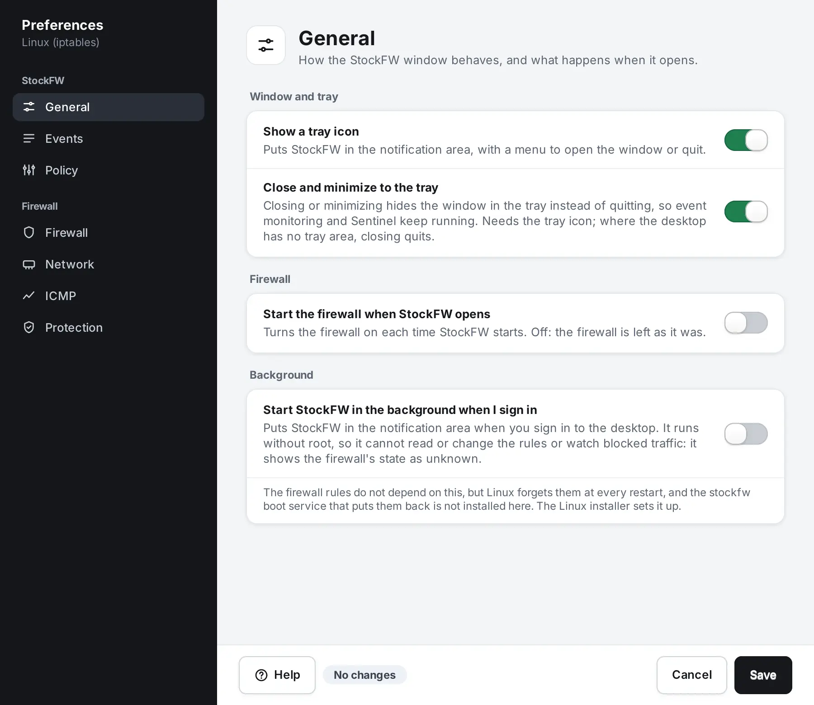
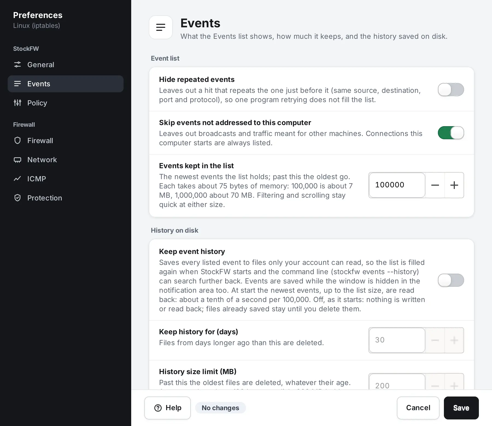
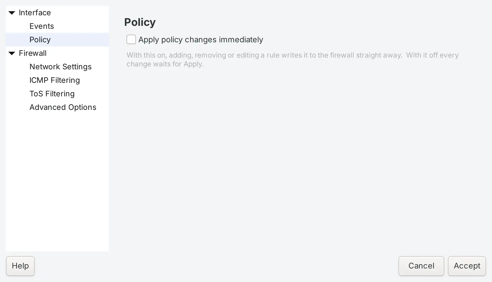
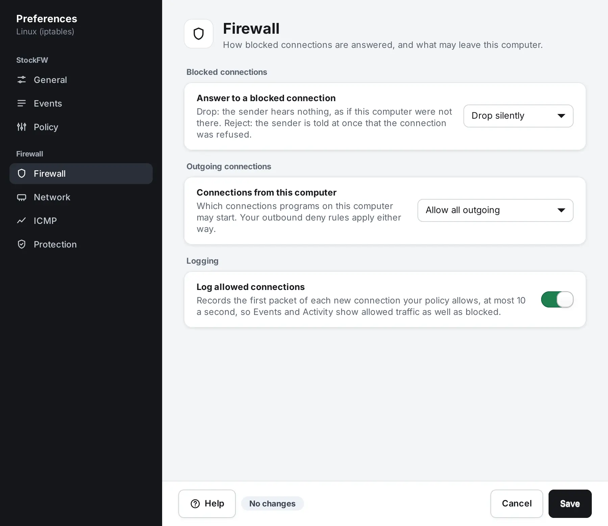
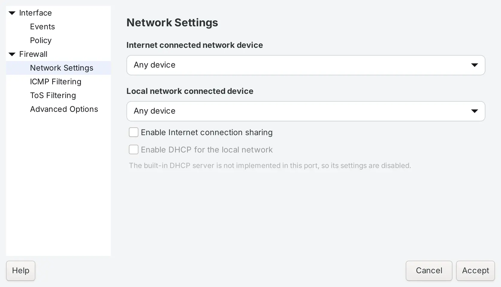
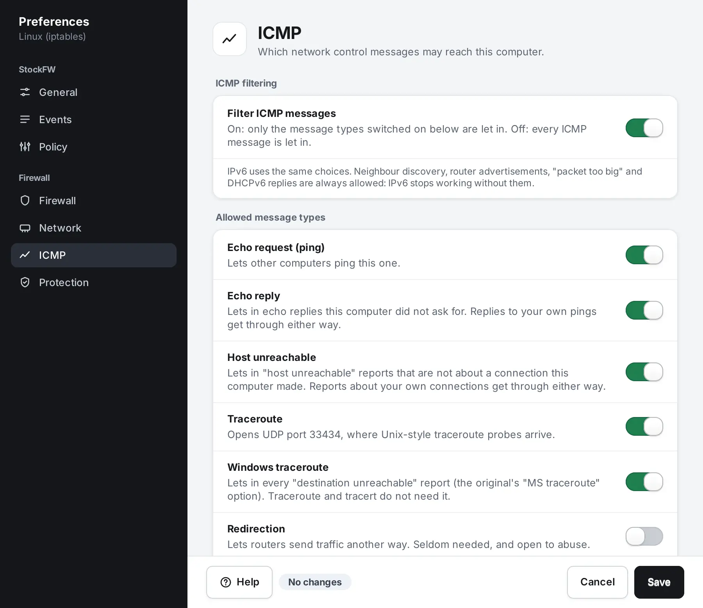
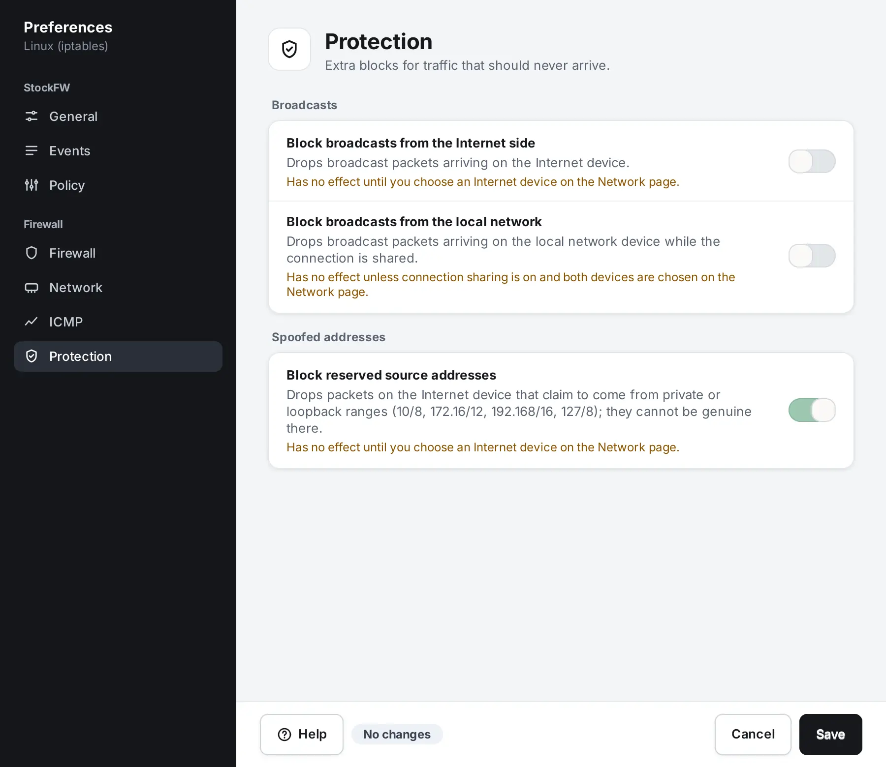

Preferences
Open it from the bottom of the sidebar or with Ctrl+,. The window has a dark sidebar with two groups, StockFW for how the program behaves and Firewall for what the engine does, and each page opens with a line on what it is for. A row that cannot work on your platform is greyed with the reason, and a page the platform cannot act on is not offered at all, so you never flip a switch that does nothing.
How the window works#

- Changes are marked where they are. A row you changed gets a bar on its left, its page gets a dot in the sidebar, and the footer counts what Save will write. Cancel writes nothing.
- Help in the footer, or F1, opens the Help window at the topic for the page you are on. Help stays open when Preferences closes.
- The settings live in one text file,
stockfw.conf. See where they are stored.
Verified ui-prefs-smoke The grouped sidebar, the page heads, the centred column and the change marks are checked on both platforms.
StockFW › General#
- Show a tray icon
- On by default. Puts StockFW in the notification area, with a menu to open the window, pause protection, reach every page or quit.
- Close and minimize to the tray
- On by default. Closing or minimising the window hides it in the tray instead of quitting, so event monitoring and Sentinel keep running. It needs the tray icon; where the desktop has no tray area, closing quits. See Background, tray and sign-in.
- Start the firewall when StockFW opens
- Off by default. Turns the firewall on each time StockFW starts, through the same gate as the Start button, so an empty policy is never applied on the way. Off, the firewall is left as it was.
- Start StockFW in the background when I sign in
- Off by default. Puts StockFW in the notification area when you sign in to the desktop. On Windows it registers a per-user scheduled task that runs without administrator rights, so the sign-in copy only shows the state; start StockFW (Elevated) for monitoring and changes and it takes over. On Linux it writes an autostart entry that runs without root, so that copy shows the firewall's state as unknown, never as Off. The note under the switch says whether your firewall rules depend on this: on Windows they never do, and on Linux it reads the state of the boot service (enabled, installed but not enabled, or missing). The switch is greyed with the reason where this copy cannot change it. Verified test-autostart.sh
StockFW › Events#

- Hide repeated events
- Off by default. Leaves out a hit that repeats the one just before it, so a scan does not flood the list. The Copilot still sees every event.
- Skip events not addressed to this computer
- On by default. Leaves out broadcasts and traffic meant for other machines.
- Events kept in the list
- 100,000 by default, up to 1,000,000. Past this the oldest go. Each event costs about 75 bytes of memory, so the default is a few megabytes.
- Keep event history
- Off by default. Saves every listed event to daily files only your account can read, so a restart does not empty the Events page. Keep history for (days), 30 by default, deletes older files; History size limit (MB), 200 by default, deletes the oldest files past that size whatever their age. The Saved history row says how much is on disk and Delete history removes it after asking. See History on disk. Verified test-eventstore.sh
StockFW › Policy#

- Apply policy changes immediately
- Each rule you add, edit or remove on the Policy page goes to the firewall as soon as it is saved, through the same gate and with the same audit line as the Apply button. Off, every change waits for Apply policy, and the Policy page shows what is staged.
- Audit-only testing mode
- Shown read-only with its state, On or Off. On, policy changes are saved and written to the audit log but the firewall is not changed. It is a safety control, so it is switched on the Policy page, where the Lock on the Overview page is also explained; the button here takes you there.
Firewall › Firewall#
Linux This page is offered on Linux only. Windows Firewall always drops silently, leaves the outbound default to its network profiles and logs through its own audit policy, so there is nothing here it could act on.

- Answer to a blocked connection
- Drop silently: the sender hears nothing, as if this computer were not there. Reject with an error: the sender is told at once that the connection was refused.
- Connections from this computer
- Allow all outgoing, the default, or Block outgoing unless allowed. In the restrictive mode only connections that an outbound allow rule on the Policy page names can leave this computer; everything else is blocked, including software updates, until you allow it, and the page says so in a warning when you pick it. Your outbound deny rules apply either way.
- Log allowed connections
- On by default. Records the first packet of each new connection your policy allows, at most ten a second, so Events, Activity and the Copilot see allowed traffic as well as blocked. Off, the Copilot's login and beacon checks see only refused traffic.
Firewall › Network#
Linux Offered on Linux only. Windows has no equivalent that the app can drive honestly, so the page is not shown there rather than shown inert.

- Internet device
- The adapter that connects this computer to the Internet. Needed for port forwards and for the blocks on the Protection page. A device marked not present is not connected right now.
- Local network device
- The adapter that faces your own network. Only used for connection sharing; traffic arriving on it is accepted.
- Share the Internet connection (NAT)
- Lets devices on your local network reach the Internet through this computer, IPv4 only. It needs both devices chosen. Port forwards need this.
Firewall › ICMP#

Filter ICMP messages turns the page on. Off, every ICMP message is let in. On, only the types switched on below may arrive:
| Type | Default | What it lets in |
|---|---|---|
| Echo request (ping) | on | Other computers may ping this one. Linux rate-limits it to one a second. |
| Echo reply | on | Echo replies this computer did not ask for. Replies to your own pings get through either way. |
| Host unreachable | on | “Host unreachable” reports not about a connection this computer made. Reports about your own connections get through either way. |
| Traceroute | on | UDP port 33434, where Unix-style traceroute probes arrive. Not ICMP at all, kept here because the original kept it here. |
| Windows traceroute | on | Every “destination unreachable” report, which Windows tracert needs. Traceroute and tracert from this computer do not need it. |
| Redirection | off | Routers may send traffic another way. Seldom needed, and open to abuse. |
| Timestamping, Address masking, Source quenching | off | IPv4 only, and the labels say so. Obsolete; timestamping also gives away the clock. |
Linux IPv6 uses the same choices. Neighbour discovery, router advertisements, “packet too big” and DHCPv6 replies are always allowed, because IPv6 stops working without them; time-exceeded and parameter-problem are always allowed on IPv4 for the same reason. The page says so under the switch.
Windows The choices become allow rules beside Windows' own, for IPv4 only; Windows' own rules may still allow some types you switch off, ICMPv6 is left to Windows, and nothing is rate-limited. The page carries both notes. Verified test-core.sh
Firewall › Protection#

- Block broadcasts from the Internet side, from the local network
- Linux Drop broadcast packets arriving on the Internet device, or on the local network device while the connection is shared. Each has no effect until the device it names is chosen on the Network page, and the note under it says so. Windows does not offer these switches: a Windows Firewall rule matches the sender's address, and no packet is sent from the broadcast address, so a rule there would block nothing. Verified test-core.sh
- Block reserved source addresses
- Anti-spoofing. On Linux it drops packets on the Internet device that claim to come from private or loopback ranges (10/8, 172.16/12, 192.168/16, 127/8), which cannot be genuine there. On Windows it applies on networks Windows treats as public, and there it blocks every inbound connection from those ranges even when an allow rule of yours lets them in, because a Windows block wins over an allow. Windows uses the public profile for new networks and most café and hotel Wi-Fi, where other devices have such addresses.
How firewall settings reach the engine#
Settings on the StockFW pages take effect when you press Save. Settings on the Firewall pages compile into rules, so after Save the window asks Apply the new firewall settings now? Apply now puts them in place under the policy that is live, with the same checks as Apply policy; changes on the Policy page that are not applied yet stay pending. Later keeps the previous settings until the policy is next applied or, on Linux, the firewall is started. A failed apply puts the previous rules back and says so. On Windows the settings become rules named StockFW … with a space, where policy rules have a hyphen, so the two sets can never collide. Verified test-core.sh
A What-If fix that changes one of these switches opens Preferences at the page that holds it. See What-If.
Linux The same settings can be read and set from a terminal with stockfw config, with the same checks and reasons as this window; it writes root’s copy, and a saved firewall setting is applied by config apply or the next policy apply, as here.
Where they are stored#
A plain ini file, stockfw.conf, with a [client] and a [firewall] group: %APPDATA%\stockfw\stockfw.conf on Windows, ~/.config/stockfw/stockfw.conf on Linux (/root/.config/stockfw/ when run as root). Start at sign-in is not a row in it: it is the scheduled task or the autostart entry itself. You can edit the file with the app closed; a missing key takes its default. See Files and formats.